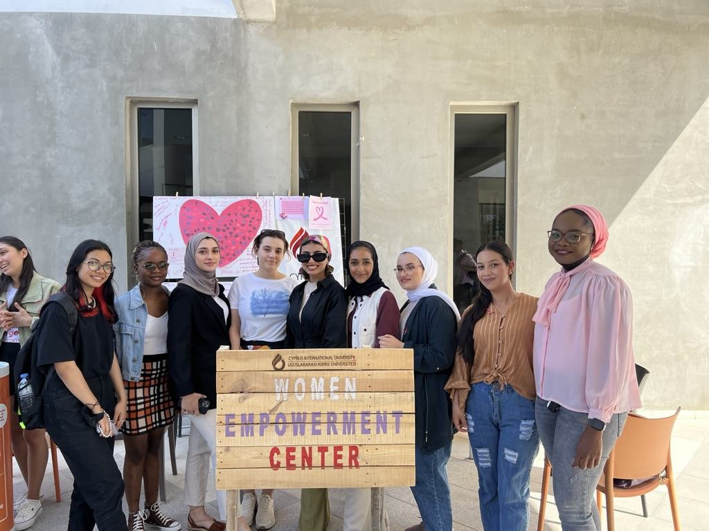

Researcher · Advocate · Community builder
I start where women stop talking.
I’m Dr. Hauwa Bashir Muhammad. I research how health and gender get talked about in the news, and I build spaces where women can talk about what usually goes unsaid.

Based in Lefkoşa, North Cyprus
Selected work
Selected projects
- Now
The Same Tuesday.
Different rules.A new project I created: a show and a letter for women aged 18 to 30 about the rules that shape their choices. Sign up before it launches.
- 2021–2022
Education for young Afghan women
After the Taliban took over Afghanistan, we enrolled more than 45 young women at CIU so they could keep studying.
- Dec 2022
Orange the World: a silent walk against gender-based violence
More than 500 students in orange, mouths covered, for the 16 Days of Activism.
- Oct–Nov 2022
Go Green with Feminine Hygiene
A week on campus about the stigma around feminine hygiene, safer natural products, and making them affordable for students.
- 2022
Women in STEM
Scholarships, mentoring, career counselling and hands-on workshop days.
- Jul–Aug 2023
Taking the centre to Nigeria
Career counselling and Women in Technology seminars in Kano and Abuja.
- May 2024
TEDxCIU: “Unlocking Empowerment: Rewriting the Foundation for All”
On equity, intersectionality and the Triangle of Empowerment.
- 2019–2026
Whose voices make the news in a health crisis
My PhD content analysis of Nigerian newspaper coverage of COVID-19.
Silence has never protected a woman.
Keynote · 25 November 2026 · 16 Days of Activism
Awareness is up, but the violence is the same: why GBV isn’t falling
My 21-minute talk for the first day of the 16 Days of Activism. Watch it, or just listen.
The Same Tuesday.
Different rules.
If you want to be part of this from the start, sign up here. It takes about two minutes.